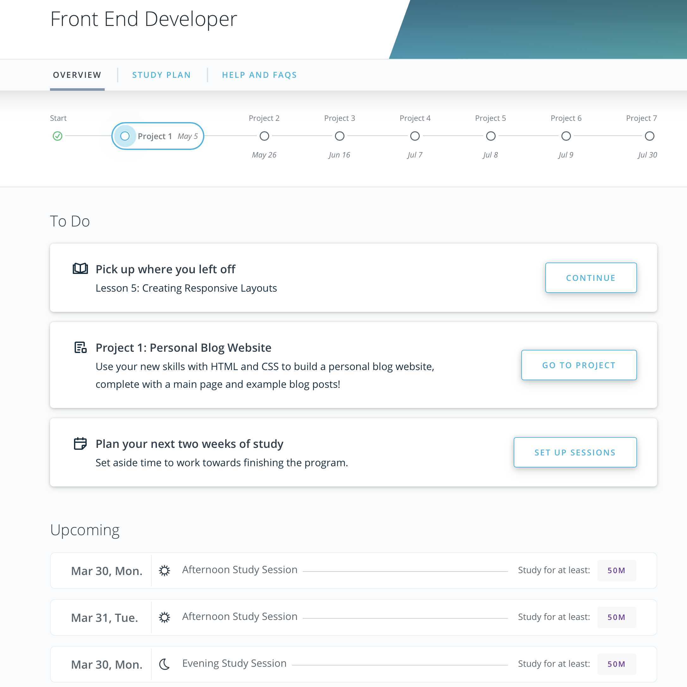

Front End Web Developer Course
My Nanodegree
Welcome to my Udacity learning Front End Web Development Project. Project Specification. Build a Blog Website from HTML5 and CSS3 using Flexbox and Grid. The course is for Udacity's Nanodegree. See my progress

The Awesome Flexbox
Flexbox, I thought to myself this is an impressive feature. A no brainer. Well, unline CSS grid. I find flexbox a more relaxed way in aligning information.
I used Flexbox in my header and navigation using a wrapper div as the parent element. Use the developer tool and inspect (right-click the screen and choose, Inspect Element) and learn how I designed the sticky navigation.
Still have to understand that there are things to learn not just adding the display: flex; I found out the easiest way to learn something is by a game. Here is the link to where you could learn while enjoying it.
I hope you enjoyed it because I did.
The Fantastic CSS Grid
You'll probably ask, does CSS grid comes with a learning game too like Flexbox? Yah, it is called Garden. Have a blast.
I admit I have not finished it yet since I want to finish this project first. It took me a whole lot of time in the accessibility testing. Remember, Udacity asked to download the axe extension on Chrome. And my iMac for some reason went haywire. Restarted the Chrome browser every time it won't appear for some reason.
Back to CSS Grid. A handy tool for us developers. Very intuitive. Laying out your page as you wanted is easy as long you know how to understand the column and row placement. I learned how to use the property, grid-area and found out you have to precisely lay out the plan in a paper or in your mind to get the placement of each Element where you want it to be. Fun!
Enjoy the trip. It's a whole new world.
Do you know?
March. My husband, up until now has been bedridden and with COVID-19 isolation, has been placed on the entire nation. Not being with him is hard to bear. I have been sketching his cat character since the third quarter of 2018, but I was putting off because of lack of time. To fight the constant depression, I started to draw his cat character again using Adobe Illustrator and a Wacom Tablet. I finally finished it between August of 2019 and put it up as a sticker app in the App store. It helped me with my situation. Kept me busy.
Joygi the Cat Sticker App is downloadable for .99 cents at the apple store. It was in my mind one way to pay the bills since I stopped working.
But right now learning to code will be one way for me to earn more when hired eventually. I believe God has his reasons why things happen the way they do.
Keeping my faith and trust, I know my husband will fight this.